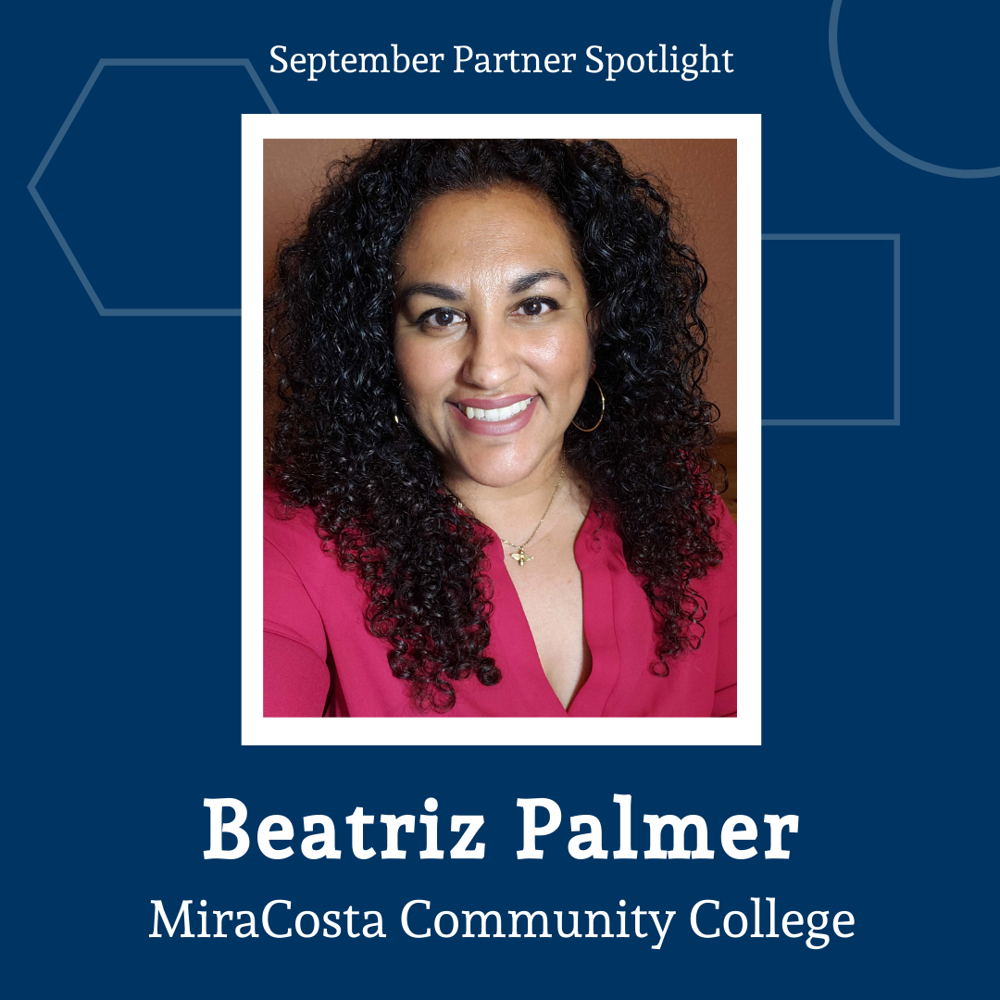
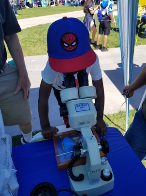

Partner Spotlight: MiraCosta Community College

Meet our September Partner Spotlight: Beatriz Palmer, M.A., Program Manager, Service Learning & Volunteer Center at MiraCosta Community College.
Share about yourself, your organization, and your role in the San Diego STEM Ecosystem.
I'm Beatriz Palmer, a first-gen scholar, my pronouns are she, her, hers, and ella. I am a Black Latina immigrant who grew up in Oceanside, CA. We immigrated to the US when I was a toddler, my parents were farm workers, and neither of them attended school, although my mother learned how to read and write when I was in third grade. Growing up I was terrified of math and science, in reflecting I think it was such an abstract concept for us. We never discussed math and science, although my parents were immersed in many STEM concepts through their work, but their lack of education didn't allow for us to make those connections. My father fixed cars and tractors, and knew all about electro-mechanics, but was self-taught. My mother knew all about the nutrients of the soil, and how to cultivate different fruits and vegetables, she understood how weather impacts crops and how to protect plants from the environment. Our home was always full of plants and my mother knew how to care for them, but we never made the connection with STEM. Even in college my fear of math continued. In my undergrad I failed math twice, but I was determined to overcome my own fear. I really think that participating in STEAM has helped me feel more comfortable with math and stats. I'm definitely an advocate for introducing STEM into early childhood and making these experiences family oriented. I now have a masters in Sociology from Arizona State University. I pushed hard to finish in less than a year, 11 months and 20 days to be exact.
I started working at MiraCosta Community College in 2006, right after the first MiraCosta Community

Math and Science Fair was created. It was created because a student who loved science and dentistry wanted to promote STEM and help others love science like she did. The next year the name was switched to the Science Fair, there wasn't enough math participation, although the public continued to seek math activities. The Science Fair was developed as an opportunity for college students to teach basic STEM concepts to the community in a "fair-like" environment. It also allowed for the faculty to work alongside their own students. The only requirement was that all activities be engaging and not lecture-like, and that they the college students be able to explain the science/STEM behind the activity, in other words "it's not magic it's science". We were so excited to bring our very own community onto a college campus to explore a free fun day of learning. Soon we realized that this was an opportunity for us to reach out to our minoritized communities who were under-represented in STEM and who were also underrepresented in college, although all were welcome to attend. The fair was set up as an outdoor and indoor open house, where families were free to roam around and visit classroom labs. Each year the community and schools reach out to ask when our next STREAM fest is happening. After ten years we realized that the Science Fair was now and old term and was being replaced with STEM, but instead we decided that every scientist needed to be a good critical thinker and reader, and must be creative, therefore the STREAM Festival was born. Now all disciplines could participate if they could connect their hands-on workshop with STEM. As a result of this we now see sociology, psychology, letters, music, art, and so many other non-traditional disciplines participate in the STREAM Festival. We had our 15th STREAM Festival in April 2021. Sadly, due to COVID we had to move it to a virtual festival, but even that was a success. One of the most exciting things for me to see the day of the STREAM Festival is seeing families engage in STEM with their children, and watching the kids cry because they don't want to go home, they want to stay and do STEM.
How did you first get involved with the Ecosystem?
I heard about Ecosystem through social media, I believe they were hosting a networking event. I had recently been promoted to coordinator, prior to that I had been the assistant. I wanted to see if there were new ideas and new partnerships for the STREAM Festival, so I attended one. It was hard to attend because we were meeting in person at the time, but once we moved into a virtual platform due to COVID, this allowed me the opportunity to attend more.
How is your job related to STEM? What is your favorite part about your job?
At the Service Learning & Volunteer Center we help students connect with the community to put into practice the concepts and theories they are learning about, this is called service learning or experiential learning. This is very different from an internship. Service Learning is a short-term type of work-based-learning where students connect with campus or community non-profits to meet their needs while fulfilling their course objectives. Typically, a student completes 15 hours of service and also qualifies for a certificate of participation which they can use for their resume, transfer application or scholarship application. Students also use these experiences for career exploration.
My favorite part of work is helping students. I love helping students find meaning and relevance to their course content and it's even more powerful when they see that what they are learning is applicable in a real work setting. When it comes to STEM, service learning has so many positive connections to service. I have seen students who are terrified of math, but by teaching a child some of the most basic math concepts they become more empowered about their own learning, and they gain a stronger self-esteem. It's also very exciting for students to take specific content and think of ways to teach it to children. Students are so creative and resourceful. I once saw a group of students who taught kids how the circulatory system worked through recycled bottles. I saw an English class turn a whole classroom into a STEM center through poetry and identity. I also love that in my job I get to meet with so many community organizations and partners. I always thinking which community partner would our students need to meet or connect with to help them in their academic journey. My job is one of the most rewarding because I get to work with students, faculty, and community.
What makes STEM so influential or important in the San Diego Community?
It's a collective of professionals that understand the value of STEM in our everyday lives, and they are committed to sharing that responsibility with others in the community. San Diego is a city where STEM businesses are thriving and what better a place to connect educators from PreK to College/University, Industry Leaders, Social Service Organizations, and museums together to create synergy. I'm not a STEM major, although I am sociologist and we are social scientist too, the Ecosystem takes everyone's ideas and creates a beautiful community of passionate individuals who promote a passion for learning STEM across many disciplines. I look forward to this monthly meeting, and although our MiraCosta STREAM Festival is only once a year, they have inspired me to do something smaller in the fall. I've also thought about how important it is for me to bring others from our STEM department to become active participants and finding ways that our students can participate, especially for those who are going into STEM careers or are thinking about becoming teachers. The more we talk about STEM through a normal lens and find the STEM in everything we do the more we'll dismantle the idea that STEM is only for certain communities for "smart" people, because now we know about the chemistry of food like making tortillas and STEM in art too
What about the San Diego STEM Ecosystem’s mission resonates with you?
It's a community of diverse individuals who are thinking outside of the box, they are creative, innovators, and love sharing their ideas. I especially love that they collectively work to identify goals. Recently in two of the workgroups, I brought up the idea of integrating racial justice and inclusion in our goals, and they were so open to it. They listened to my concerns about the lack of STEM resources among our minoritized communities. Although the Ecosystem work is changing our communities, there are still communities that are under-represented in STEM. Together we identified ways to dismantle the stigmas of learning math and STEM in communities of color. I also love that we are thinking about ways to connect kids and students with STEM Career paths. We recently presented a workshop for a child development organization that services low-income families, and we were able to offer that workshop in English and in Spanish. We have also developed tools in Spanish so that Spanish speaking families can have ways to identify and put into practice simple STEM concepts through their everyday living.
If you would like to learn more about the Service Learning program at MiraCosta Community College please email bpalmer@miracosta.edu or call 760-795-6616.
Related Articles

Meet our December Partner Spotlight: Jim Stone, Executive Director of the Elementary Institute of Science

Meet our November Partner Spotlight: Sarah Cooper, Executive Director of The League of Amazing Programmers

Meet our August Partner Spotlight: Olivia Mullins, founder of Science Delivered.

Meet Amanda Lee, Center Director at Brain Balance of San Diego

The Thriving Earth Exchange Community Science Fellowship brings together scientists, community leaders, and sponsors to work toward solving local challenges.

The STEM ecosystem initiative cultivates and supports bringing together local stakeholders across education, science and business sectors to ensure all students have opportunities to develop the knowl

A great TEDx talk by Kevin Sweeny titled "Community-Driven Innovation with Collective Impact" that is based off of the 2011 article by Mark Kramer and John Kania.